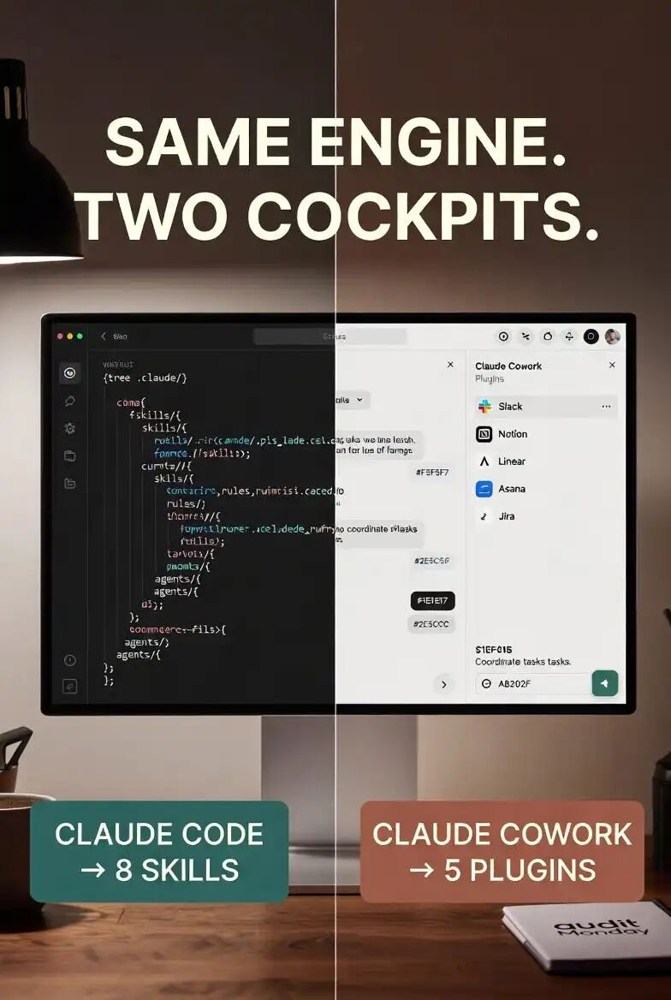

“ 文章梳理 Anthropic 新发布的 Code 技能与 Cowork 插件，并解释两套生态为什么不能混为一谈。
Anthropic 发布 17 个 Code 技能和 11 个 Cowork 插件
大多数关于 “Claude Skills” 的教程都会把 Code 和 Cowork 当作同一个环境来讲。但实际上，Anthropic 维护着两个彼此独立的官方仓库——anthropics/skills（面向开发者终端，包含 17 个官方 skills）和 anthropics/knowledge-work-plugins（面向知识工作者 GUI，包含 11 个 plugins，并集成 Slack、Notion、Asana、Linear、Jira、Monday、ClickUp、Microsoft 365 连接器）。这两类场景的最佳技术栈，确实并不相同。
打开 Anthropic 的 GitHub，你会发现大多数 “Claude Skills 配置教程” 很少同时提到这两个官方仓库：
anthropics/skills—— 超过 135,000 stars，包含 17 个官方 skills，主要面向在终端中使用 Claude Code 的开发者anthropics/knowledge-work-plugins—— Anthropic 单独开源的另一个仓库，包含 11 个专为在桌面应用中使用 Claude Cowork 的知识工作者设计的 plugins，并内置 Slack、Notion、Asana、Linear、Jira、Monday、ClickUp 和 Microsoft 365 连接器
这两个仓库彼此独立，并不是打包方式上的偶然，而是反映了一个很多教程都忽略的结构性事实：Claude Code 和 Claude Cowork 是运行在同一套 agentic architecture 之上的两个不同环境，但它们分别针对两类截然不同的用户进行了优化。因此，各自的最佳 skill stack 也不同。
到了 2026 年，真正掌握 Claude，并不意味着看完一篇“12 个最佳 skills”清单文章，然后把同一套配置同时装进两个环境里。更重要的是理解每个环境到底是为了解决什么问题、为它们分别选择合适的官方起步组合，并建立起一套审计与维护习惯，让这两套技术栈都能长期保持健康。
本文就是这份完整的双栈地图。
根本区别：每个环境究竟是为了解决什么问题
Claude Code 和 Claude Cowork 都运行在同一套 agentic architecture 之上：同样的模型智能、同样的 Skills 系统、同样的工具调用机制、同样的上下文管理。正如 Anthropic 官方 Cowork 文档所说："Cowork uses the same agentic architecture that powers Claude Code, now accessible within Claude Desktop."
真正不同的，是它们对 workspace 的预设。
Claude Code 默认你处在一个项目文件夹里，通过终端围绕代码（或与代码紧密相关的任务）开展工作。一次会话通常持续时间较长、步骤较多，并且往往具有较强的 agentic 特征，几乎总是感知文件系统。项目中的 .claude/ 文件夹与代码仓库并列存在。一次会话可能会围绕同一个问题持续数小时，输出结果也常常是新的代码，或对现有文件的修改。
Claude Cowork 默认你处在一个文档与应用组成的工作环境中，处理的是知识型任务——撰写、分析、沟通，以及跨你已经在使用的工具进行协同。它的会话通常更短、更离散。相比项目结构，集成能力更重要。输出结果往往是一份文档、一条 Slack 消息、一个 Notion 页面、一张 Jira 工单，或者一次跨多个工具联动完成的操作。
当然，这并不是绝对割裂的边界。开发者也会用 Cowork 撰写技术规格说明和面向干系人的更新；知识工作者偶尔也会借助 Claude Code 编写数据分析脚本。但就默认配置而言，这两个环境的最佳起点确实不同。
Skills 与 Plugins：架构层面的区别
这两个环境在封装方式上也略有不同：
Skill 是一个单独的 Markdown 文件（SKILL.md），外加可选的参考资料，用来教 Claude 完成某一项具体任务。当相关上下文出现时，skills 会自动触发。这是你在 Claude Code 中安装的基本单元，同时也是 Cowork plugins 的内部构件。
Plugin 则是一个完整的软件包：把 skills、connectors、slash commands 和 sub-agents 一起打包，面向某一种具体工作职能。安装一个 plugin，得到的不是单一能力，而是一整套已经配置好的工作流。
Anthropic 的 Cowork 文档对此写得很明确："Each plugin bundles skills, connectors, slash commands, and sub-agents for a specific job function, and out of the box, they give Claude a strong starting point for helping anyone in that role."
这意味着，Cowork 的基本原语是 plugin（因为知识工作天然跨越多个工具和流程），而 Claude Code 的基本原语是 skill（因为开发工作通常围绕单个项目和工具链展开）。
从用户角度看，实际差异就是：在 Claude Code 中，你通常会安装 8–12 个独立 skills；而在 Cowork 中，你更可能安装 3–5 个 plugins（每个 plugin 内部都由多个 skills、connectors 和 commands 协同组成）。
Claude Code 技术栈（开发者环境）
Claude Code 技术栈在本系列前文中已经有较完整的说明。这里先给出一个简要结论：经过严格审计后，真正值得保留的部分如下。
值得安装的官方 Skills
在 anthropics/skills 中，以下 6 个技能能稳定通过资深开发者的审查：
docx —— 创建和编辑 Word 文档（即使在开发工作流中，也经常会用于规格说明和文档编写） pdf —— PDF 处理、生成、表单填写和 OCR pptx —— 用于技术演示文稿的 PowerPoint 创建 xlsx —— 面向结构化数据处理的 Excel 能力 Frontend Design —— 截至 2026 年 3 月安装量超过 277,000，可让 Claude 在 Web/UI 工作中更有意识地做出审美与设计选择 MCP Builder —— 生成 MCP server 样板代码，加速集成层搭建
团队自定义 Skills
在任何成熟的资深团队配置中，价值最高的往往是 2–3 个团队专属技能——它们用于沉淀你们团队特定的编码规范、评审清单、部署 runbook 或领域知识。应将这些技能构建在 .claude/skills/ 下，并与代码一同纳入版本控制。
8 个技能的上限
按照 Anthropic 的实践建议，一旦技能数量超过 8–12 个，“context tax” 就会开始明显累积（文档化审计数据显示：每个 skill 在每次会话启动时大约会额外加载 60 tokens；安装了 31 个 skills 时，每个 session 会产生约 23,000 tokens 的无效上下文负载）。
审计方法也很直接：每月检查一次，删除过去 30 天内一次都没触发过的技能，再将基线收敛回 8–12 个。这是资深使用者的做法；初级使用者的典型做法则是一路收集、从不清理。
.claude/ 文件夹
完整的 Code 配置还包括 rules/（按路径生效的行为规则）、agents/（subagents）、settings.json（hooks 和权限）以及 .mcp.json（5–8 个 MCP servers）。真正带来明显质量差异的，不是一个模糊的 CLAUDE.md，而是这套组合式结构。
如果想进一步深入了解：本系列前文已经分别讨论过 skills 架构、审计方法，以及完整的 .claude/ 目录构成。
Cowork 技术栈（知识工作者环境）
这是大多数 Skills 相关文章没有覆盖到的部分——面向知识工作者的一整套能力栈，运行位置是在 Claude Desktop，而不是终端中。
Anthropic 的 11 个官方插件（来自 anthropics/knowledge-work-plugins）
Anthropic 将 11 个插件开源了出来，这些插件都基于并吸收了其内部团队的实际工作流。截至 2026 年年中，这套插件覆盖的方向包括：
任务与项目管理 —— 协同 Asana、Linear、Jira、Monday、ClickUp 日历与会议流 —— 集成 Google Calendar 和 Microsoft 365 文档与知识管理 —— Notion、Microsoft 365（Word、Excel、OneDrive） 团队沟通 —— Slack、Microsoft Teams 日常工作流自动化 —— 个人上下文与周期性任务管理 客户与 CRM 工作流 —— 面向销售和客户成功团队 工程协同 —— 为工程经理打通 Jira、GitHub 和 Slack 市场运营 —— campaign 管理与内容工作流 People operations —— 跨工具的人力资源协同
每个插件都会打包对应的 skills（例如 “how to write a Notion meeting summary”）、所需 connectors（例如 “Notion API authentication”）、slash commands（例如 /summarise-meeting），以及 sub-agents（例如在起草一封客户触达邮件前，先从 CRM 拉取上下文信息的 research subagent）。
安装合适的 3–5 个插件，而不是 11 个全装
同样需要遵循审计纪律——把 11 个插件全部装上，同样会带来 context tax。应根据你的实际岗位来选择：
对 PM / product lead：Linear（或 Jira）plugin + Slack plugin + Notion plugin + Asana plugin = 4 个插件，覆盖 90% 的项目工作 对 sales / customer lead：CRM plugin + Slack plugin + Calendar plugin + email/Microsoft 365 plugin = 4 个插件，覆盖大多数面向客户的工作流 对 marketing lead：Marketing operations plugin + Notion plugin + Slack plugin + Calendar plugin 对 engineering manager：Engineering coordination plugin + Slack plugin + Linear/Jira plugin + Calendar plugin
核心原则很简单：只安装你每天实际在用的工具对应插件。一个你几乎不用的工具，其插件只会制造 context tax，不会带来实际触发率。
Connectors 是集成层
与 Claude Code 相比，Cowork 在实际使用中最大的优势，是它的 connector ecosystem。每个插件都自带对相关 SaaS 工具的认证访问能力。你只需安装一次、认证一次，之后 Claude 就能在同一段对话中直接读取 Slack、在 Notion 中起草消息、创建 Jira ticket、查询你的 Asana workspace。
Cowork 的复利效应就体现在这里。在 Cowork 中，一次 Claude 对话就可以完成：读取某个指定频道过去一周的 Slack 消息，将讨论内容总结成一页 Notion 文档，从行动项里创建 3 个 Asana 任务，并通过 Slack 私信通知对应负责人。整个过程不需要在不同应用之间来回切换，也不用在工具之间复制粘贴。
而在 Claude Code 里，要实现相同流程，通常需要手动运行多个 MCP server，前期配置也明显更重。对于知识型工作来说，Cowork 在产品结构上更合适。

自定义团队插件
这里仍然适用 Claude Code 的同一条原则：最有价值的插件，通常是你自己构建的那个，因为它能沉淀你团队特有的工作流。
高价值自定义插件的典型例子包括：
“我们公司的客户 onboarding 流程”——把新客户签约后团队实际遵循的步骤、每一步所需的数据，以及标准沟通模板编码进去 “我们公司的事故响应流程”——当系统出问题时自动触发的 runbook “我们公司的季度规划流程”——包括文档结构、评审检查点，以及与相关方的沟通方式
自定义插件应放在你所在组织的插件目录中。真正能持续产出价值的做法是：围绕团队反复执行的工作流构建插件，而不是围绕只做一次的流程去做。
交叉技能：两种环境都适用的能力
有些技能在两种环境里都很有用，而且在审计中通常都会排在前列：
docx、pdf、pptx、xlsx—— 这些文档生成技能在两边的工作方式完全一致。在 Cowork 中它们是默认内置的；在 Claude Code 中则需要显式安装。Brand-guidelines / writing-style skills —— 把团队的语言风格和视觉规范固化下来，既有助于代码侧文档写作，也有助于 Cowork 侧的沟通输出 Domain-knowledge skills —— 比如“我们的产品如何工作”“我们的定价模型”“我们的客户细分”——无论是在这些领域上编写代码，还是产出相关知识型内容，都会用到
这些能力只需要构建一次，然后安装到两个环境中即可。
按环境调整后的审计方法
30 天审计机制同样适用于两个环境，只是执行方式略有不同：
Claude Code 审计（每月）
列出 ~/.claude/skills/和.claude/skills/中所有已安装 skills回看过去 30 天的 session logs，给每个 skill 标记为 FIRED / MANUALLY INVOKED / ZERO FIRES 删除 ZERO FIRES将基线重新收敛到 8–12 个
Cowork 审计（每月）
列出 Cowork 插件目录中所有已安装插件 回看过去 30 天的对话：哪些插件的 tools、connectors 或 slash commands 实际被调用过？ 卸载过去 30 天内没有任何 tool / connector / command 触发的插件 将基线重新收敛到 3–5 个活跃插件
Cowork 的审计方式之所以略有不同，是因为插件本身是更大的功能单元。卸载一个插件，移除的是整套功能包（多个 skills + connectors + commands），因此删除一个插件带来的扰动更大，相应地，它的删除门槛也应高于单个 skill。
统一心智模型
理解 2026 年的 Claude，最简洁的方式是：
同一个引擎，两套驾驶舱。
引擎 = 模型智能、agentic loop、skills 架构、MCP 支持、hooks、sub-agents 驾驶舱 1（Claude Code）= 面向开发者的终端，按项目范围工作，理解代码，支持长时间 agentic session，以单个 skill 作为基本单元 驾驶舱 2（Cowork）= 面向知识工作者的桌面环境，围绕文档和应用工作，高度依赖集成，session 更短且更离散，以插件（成组能力）作为基本单元
真正掌握 Claude，意味着你知道面对什么任务该进入哪一套驾驶舱，并能为每套驾驶舱配置合适的能力栈。大多数人通常只会坐进其中一个驾驶舱；而这个统一心智模型，会帮你解锁另一个。
“ 你不是在 Claude Code 和 Cowork 之间二选一。你要做的是：针对每个任务选择更合适的那个，并持续对两边的能力栈进行审计。
90 天掌握计划
如果你的目标是在两个环境中都真正掌握 Claude，可以按下面的节奏推进：
第 1–14 天：在本地安装 Claude Code，并完成 Anthropic Academy 的 Claude Code 101 和 Claude Code in Action 课程。搭建一个项目，配好基础的 .claude/ 目录结构（CLAUDE.md、6 个官方 skills、带有一个 hook 的 settings.json）。完整跑通一个真实编码项目。
第 15–28 天：在桌面端安装 Claude Cowork。安装 3 个与自己实际工作职责匹配的插件。接好所需集成（Slack、Notion、Linear、Jira——以你实际在用的为准）。完整跑通一条真实的知识工作流（例如，把一周的 Slack 内容总结为一份 Notion 更新，并创建对应的 Asana 任务）。
第 29–60 天：为 Claude Code 构建一个自定义 skill，把你在代码库中反复执行的某个工作流固化下来；再为 Cowork 构建一个自定义 plugin，把你在知识型工作中反复执行的某个工作流沉淀下来。真正的复利效应，正是从这些定制化构建开始的。
第 61–90 天：对这两套栈各做一次首次月度审计。删掉那些从未触发的项。判断对你当前角色而言，哪个环境实际产出的价值更高，并在下一轮周期中向它倾斜。同时，把下一次审计节奏加入日历。
90 天结束时：你将同时熟练掌握两个“驾驶舱”，拥有两套经过审计的栈，并建立起持续维护它们的纪律。从这里开始，重点就变成持续迭代。
直到 2026 年及之后，接下来会发生什么
跨环境的 skill 可移植性。 Anthropic 已经释放出信号：在适用的情况下，一个环境中构建的 skill 应当也能在另一个环境中工作。接下来可关注官方工具链的更新——未来的仓库更新中，很可能会出现“this skill works in both”之类的双环境兼容标识。
Cowork plugin marketplace。 从这 11 个官方 plugin 已经展示出的模式来看，预计到 2026 年，围绕 Cowork 会形成社区插件市场。配套的质量评分体系和精选清单也会逐步出现。
Cowork 中更紧密的 MCP 集成。 目前，在 Cowork 中安装 MCP server 仍比在 Claude Code 中更复杂。未来这两者大概率会趋于一致——在 Cowork 中安装 MCP server，很可能会变得像安装 plugin 一样直接。
“personal Claude”模式。 随着两个环境不断成熟，同一位用户往往会在工作笔记本上运行 Claude Code，在个人设备上使用 Cowork。下一阶段的前沿方向，是跨设备的 skill 与对话连续性——Anthropic 的 persistent memory 功能（已于 2025 年末开始推出）正是这一方向的早期形态。
混合式工作流。 有些工作流天然就横跨两个环境——例如开发者先在 Claude Code 中完成编码，再在 Cowork 中为非技术利益相关方总结一周的 PR。最干净的模式，是让每个工具各司其职，由人来完成交接。接下来可以留意官方是否会推出让这种交接更顺畅的工具。
更坦诚的判断
围绕 Claude Skills 的内容生态，常常把 Code 和 Cowork 当成同一种东西来讲。但 Anthropic 并不这么看——这也是为什么它们有两个彼此独立的官方仓库，承载不同内容、面向不同目标用户，也对应不同的最优配置方式。
对于任何想在 2026 年真正掌握 Claude 的人，现实含义是：
为正确的任务选择正确的环境。Code 用于项目范围内的开发者工作；Cowork 用于文档与应用驱动的知识型工作；有时同一个项目在不同阶段也会同时用到两者。 从正确的仓库安装。Claude Code 对应 anthropics/skills；Cowork 对应anthropics/knowledge-work-plugins。底层架构相同，但默认包不同。对两边都执行审计纪律。Code 保持 8–12 个 skills，Cowork 保持 3–5 个 plugins，并按月复查。 围绕你团队的真实工作流来构建自定义 skills 和 plugins。官方套件覆盖的是通用模式；而只有定制化构建，才能沉淀你们团队独有的经验。 把统一的心智模型视为真正的突破口。同一套引擎，两个驾驶舱。分别掌握它们，然后有意识地在两者之间切换。
那份 12-skill 安装指南是一个不错的起点。真正把使用 Claude 的人和能够在 Anthropic 实际交付的环境中“操作” Claude 的人区分开的，是对双栈的熟练掌控。
当你不再把它们视为同一个产品时，复利才真正开始发生。
如果这段重构了你的认知，不妨分享给那个只在两个环境之一里安装过 skills 的人。另一个驾驶舱其实一直在那里：它有不同的官方起步包，也有不同的审计纪律。当你同时坐进两个驾驶舱，复利会翻倍。
7. 已验证参考资料
GitHub — anthropics/skills官方 Claude Skills 仓库。https://github.com/anthropics/skills[1]GitHub — anthropics/knowledge-work-plugins官方 Cowork 插件仓库。https://github.com/anthropics/knowledge-work-plugins[2]Anthropic — Cowork：将 Claude Code 的能力扩展到知识工作。https://claude.com/product/cowork[3] Anthropic Help Center — 什么是 Skills？https://support.claude.com/en/articles/12512176-what-are-skills[4] Anthropic Help Center — 快速开始使用 Claude Cowork。https://support.claude.com/en/articles/13345190-get-started-with-claude-cowork[5] Anthropic Academy — Claude Cowork 入门。https://anthropic.skilljar.com/introduction-to-claude-cowork[6] Anthropic API Docs — Agent Skills 概览。https://platform.claude.com/docs/en/agents-and-tools/agent-skills/overview[7] Anthropic API Docs — Skill 编写最佳实践。https://platform.claude.com/docs/en/agents-and-tools/agent-skills/best-practices[8] Noor Mohamad / Stackademic —《12 个最佳 Claude Skills 配置：2026 完整指南，像专业人士一样配置 Claude》。https://blog.stackademic.com/the-best-12-claude-skills-setup-a-complete-2026-guide-to-configuring-claude-like-a-pro-486d2fd906f3[9] Karo Zieminski —《Claude Code、Cowork 与 Skills：经测试的指南、工作流，以及真正有效的方法》。https://karozieminski.substack.com/p/claude-guides-code-cowork-skills-workflows[10] Karo Zieminski —《面向高级用户的 Claude Cowork 指南：50+ 条经过验证的插件、Skills、Sub-Agents 与 Memory 使用技巧》。https://karozieminski.substack.com/p/claude-cowork-guide-plugins-memory-sub-agents-tips[11] Hedgineer —《我们如何用 Claude Skills 构建公司级知识层》。https://www.hedgineer.io/content/claude-skills-knowledge-layer/[12] Composio —《2026 年不容错过的最佳 Claude Cowork 插件》。https://composio.dev/content/best-cowork-plugins[13] GitHub — travisvn/awesome-claude-skills社区整理清单。https://github.com/travisvn/awesome-claude-skills[14]Build Fast with AI —《Claude Skills：2026 完整指南——构建、安装与使用》。https://www.buildfastwithai.com/blogs/claude-skills-complete-guide-2026[15]
[1]https://github.com/anthropics/skills
[2]https://github.com/anthropics/knowledge-work-plugins
[3]https://claude.com/product/cowork
[4]https://support.claude.com/en/articles/12512176-what-are-skills
[5]https://support.claude.com/en/articles/13345190-get-started-with-claude-cowork
[6]https://anthropic.skilljar.com/introduction-to-claude-cowork
[7]https://platform.claude.com/docs/en/agents-and-tools/agent-skills/overview
[8]https://platform.claude.com/docs/en/agents-and-tools/agent-skills/best-practices
[9]https://blog.stackademic.com/the-best-12-claude-skills-setup-a-complete-2026-guide-to-configuring-claude-like-a-pro-486d2fd906f3
[10]https://karozieminski.substack.com/p/claude-guides-code-cowork-skills-workflows
[11]https://karozieminski.substack.com/p/claude-cowork-guide-plugins-memory-sub-agents-tips
[12]https://www.hedgineer.io/content/claude-skills-knowledge-layer/
[13]https://composio.dev/content/best-cowork-plugins
[14]https://github.com/travisvn/awesome-claude-skills
[15]https://www.buildfastwithai.com/blogs/claude-skills-complete-guide-2026